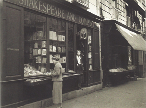
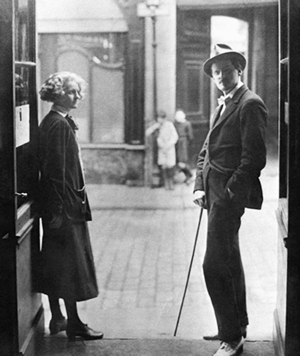
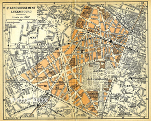

Sylvia Beach's famous bookstore, Shakespeare & Company,
was a social hub for anglophone expatriate Paris. In addition to
selling books there, Beach also operated a small lending library.
Explore the subscribers' library cards: see what people were
reading. See the cards
The Expats

The site contains a prosopography of expatriate Paris, drawn
initially from the subscribers to Beach's libary. Learn about the
community: where they lived, their reading habits. Browse subscribers
Modernist Paris

Explore Modernist Paris through maps that show where people
lived. View maps